# Velocity Verlet for a system of many variables (2D/3D, one or many particles)
velocity_verlet_generic <- function(f, t0, x0, v0, t.total, dt, ...){
# x0, v0: vectors of initial positions and velocities (all coordinates)
t_all <- seq(t0, t.total, by = dt)
nt_all <- length(t_all); nx <- length(x0)
x_all <- matrix(0, nrow = nt_all, ncol = nx)
v_all <- matrix(0, nrow = nt_all, ncol = nx)
x_all[1,] <- x0; v_all[1,] <- v0
for (i in 1:(nt_all - 1)) {
v_half <- v_all[i,] + 0.5 * dt * f(t_all[i], x_all[i,], ...)
x_all[i+1,] <- x_all[i,] + dt * v_half
v_all[i+1,] <- v_half + 0.5 * dt * f(t_all[i+1], x_all[i+1,], ...)
}
return(cbind(t_all, x_all, v_all)) # columns: t, then all x, then all v
}5B. Orbital motion
From here on we use only the velocity Verlet method to integrate Newton’s equation of motion, generalized to systems with many variables: a single particle in two or three dimensions, or many interacting particles. The position and velocity become vectors that hold every coordinate, and the update equations are applied component by component.
import numpy as np
import matplotlib.pyplot as plt
# Velocity Verlet for a system of many variables (2D/3D, one or many particles)
def velocity_verlet_generic(f, t0, x0, v0, t_total, dt, **kwargs):
# x0, v0: vectors of initial positions and velocities (all coordinates)
t_all = np.arange(t0, t_total + dt, dt)
nt_all = len(t_all); nx = len(x0)
x_all = np.zeros((nt_all, nx)); v_all = np.zeros((nt_all, nx))
x_all[0,:] = x0; v_all[0,:] = v0
for i in range(1, nt_all):
v_half = v_all[i-1,:] + 0.5 * dt * f(t_all[i-1], x_all[i-1,:], **kwargs)
x_all[i,:] = x_all[i-1,:] + dt * v_half
v_all[i,:] = v_half + 0.5 * dt * f(t_all[i], x_all[i,:], **kwargs)
return np.column_stack((t_all, x_all, v_all)) # columns: t, then all x, then all v5B.1 Modeling an orbital motion
As a first example, a particle in a plane is attracted toward a fixed center (think of a satellite and the Earth) by a force whose magnitude falls off with distance \(r\),
\[ f(r) = \frac{G}{r} , \tag{3} \]
with \(G\) a constant and the force pointing from the particle toward the center. Resolving it into Cartesian components gives
\[ \begin{cases} f_x(x, y) = -\dfrac{G x}{r^2} \\[2mm] f_y(x, y) = -\dfrac{G y}{r^2} \end{cases} \tag{4} \]
where \(r^2 = x^2 + y^2\). We simulate two initial conditions and view each both as time series of \(x(t)\) and \(y(t)\) and as a trajectory in the \(x\)-\(y\) plane.
NoteRecipe 5B.1.1
Objective. Simulate a single particle orbiting under a central attractive force.
Model. A central force of magnitude G/r pointing toward the origin, with Cartesian components fx = -G*x/r^2, fy = -G*y/r^2, and r^2 = x^2 + y^2.
Method. The generic vector velocity-Verlet integrator applied to one 2D particle.
Test. G = 1, dt = 0.1; two runs, initial position (4, 0) with velocity (0, 1) to t = 100, and (2, 2) with velocity (-1, 1) to t = 1000.
Show. Orbit plots in the plane for both initial conditions (the ellipse and the rosette).
Verification. The first initial condition gives a closed, nearly elliptical orbit; the second traces a precessing rosette that fills an annulus and never quite closes.
R implementation
# gravitational force toward the origin in 2D
f_g2d <- function(t, x, G){
# x: vector (x, y)
r2 <- x[1]^2 + x[2]^2
return(-x * G / r2)
}
result_g2d <- velocity_verlet_generic(f = f_g2d, t0 = 0, x0 = c(4, 0), v0 = c(0, 1),
t.total = 100, dt = 0.1, G = 1)
plot(result_g2d[,1], result_g2d[,2], type = "l", col = 2,
xlab = "t", ylab = "position", xlim = c(0,100), ylim = c(-8,8))
lines(result_g2d[,1], result_g2d[,3], col = 4)
legend("topleft", inset = 0.02, legend = c("x","y"), col = c(2,4), lty = 1, cex = 0.8)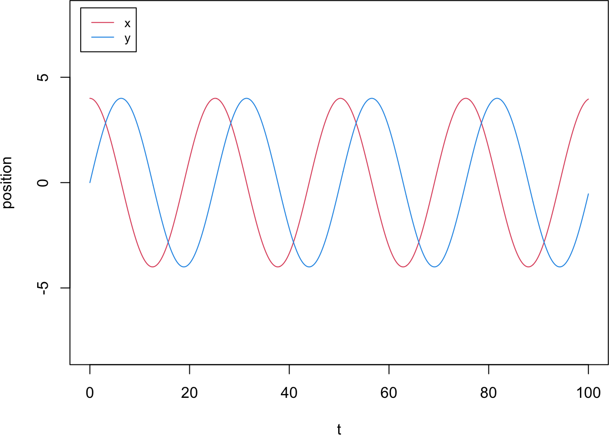
par(pty = "s") # square panel for the x-y orbit
plot(result_g2d[,2], result_g2d[,3], type = "l", asp = 1,
xlab = "x", ylab = "y", xlim = c(-8,8), ylim = c(-8,8))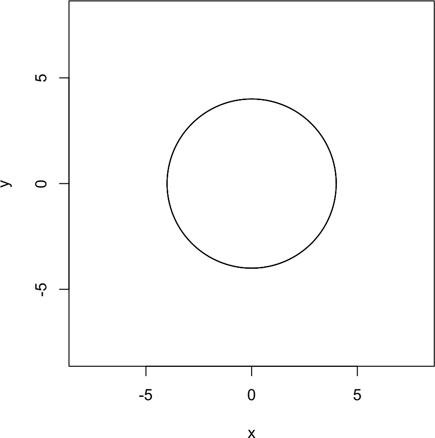
# a second initial condition, integrated for longer
result_g2d2 <- velocity_verlet_generic(f = f_g2d, t0 = 0, x0 = c(2, 2), v0 = c(-1, 1),
t.total = 1000, dt = 0.1, G = 1)
plot(result_g2d2[,1], result_g2d2[,2], type = "l", col = 2,
xlab = "t", ylab = "position", xlim = c(0,100), ylim = c(-8,8))
lines(result_g2d2[,1], result_g2d2[,3], col = 4)
legend("topleft", inset = 0.02, legend = c("x","y"), col = c(2,4), lty = 1, cex = 0.8)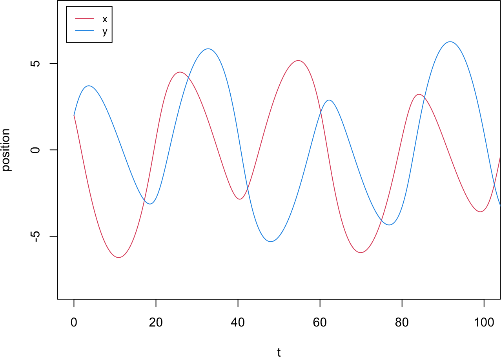
par(pty = "s")
plot(result_g2d2[,2], result_g2d2[,3], type = "l", asp = 1,
xlab = "x", ylab = "y", xlim = c(-8,8), ylim = c(-8,8))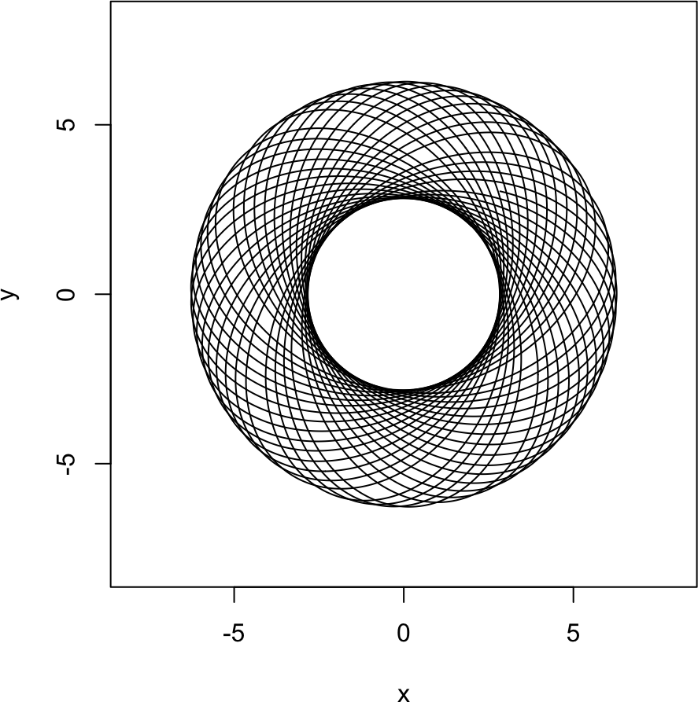
Python implementation
# gravitational force toward the origin in 2D
def f_g2d(t, x, G):
# x: vector (x, y)
r2 = np.sum(x**2)
return -x * G / r2
result_g2d = velocity_verlet_generic(f_g2d, 0, np.array([4.0, 0.0]), np.array([0.0, 1.0]),
100, 0.1, G=1)
plt.plot(result_g2d[:,0], result_g2d[:,1], color="red", label="x")
plt.plot(result_g2d[:,0], result_g2d[:,2], color="blue", label="y")
plt.xlabel("t"); plt.ylabel("position"); plt.xlim(0,100); plt.ylim(-8,8)Text(0.5, 0, 't')
Text(0, 0.5, 'position')
(0.0, 100.0)
(-8.0, 8.0)plt.legend(loc="upper left"); plt.show()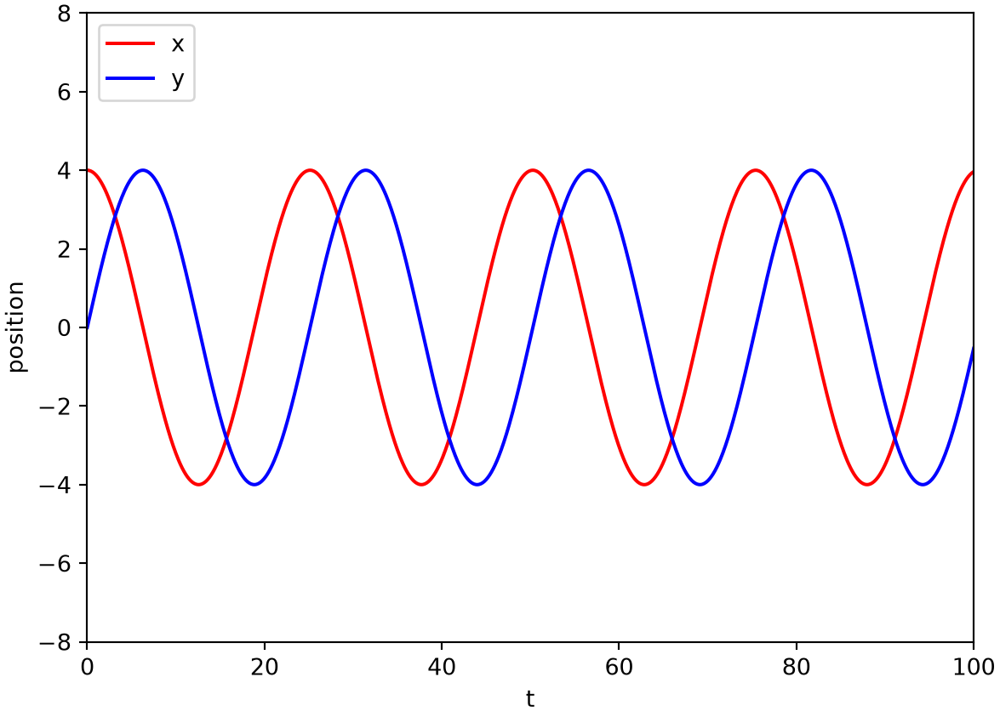
plt.plot(result_g2d[:,1], result_g2d[:,2], color="black")
plt.gca().set_aspect("equal") # square panel for the x-y orbit
plt.xlabel("x"); plt.ylabel("y"); plt.xlim(-8,8); plt.ylim(-8,8); plt.show()Text(0.5, 0, 'x')
Text(0, 0.5, 'y')
(-8.0, 8.0)
(-8.0, 8.0)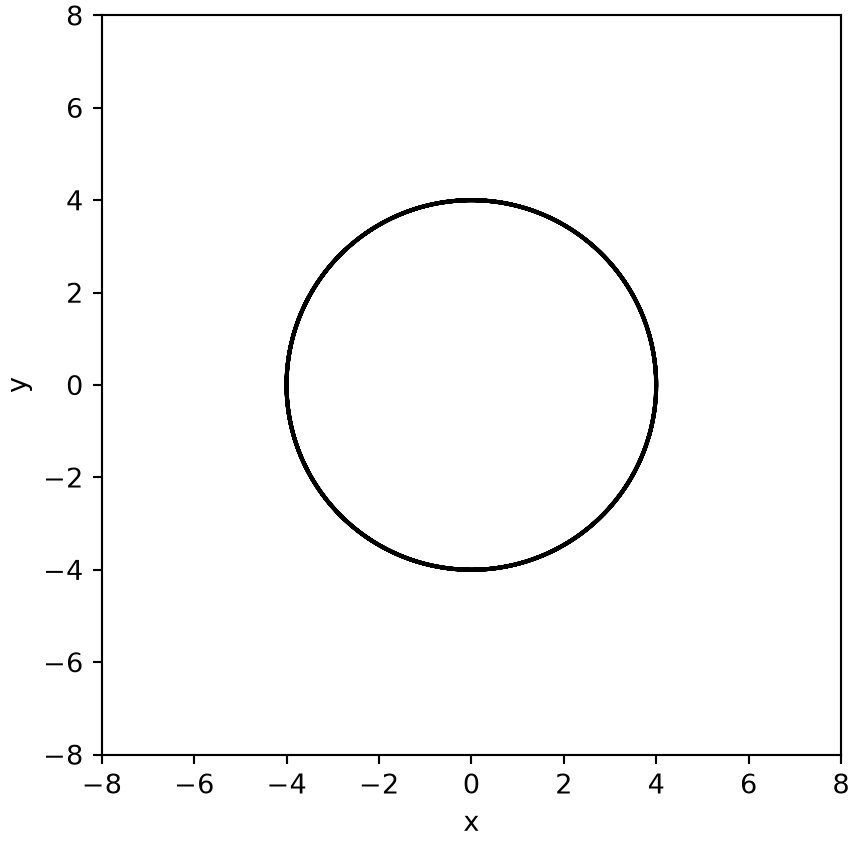
# a second initial condition, integrated for longer
result_g2d2 = velocity_verlet_generic(f_g2d, 0, np.array([2.0, 2.0]), np.array([-1.0, 1.0]),
1000, 0.1, G=1)
plt.plot(result_g2d2[:,0], result_g2d2[:,1], color="red", label="x")
plt.plot(result_g2d2[:,0], result_g2d2[:,2], color="blue", label="y")
plt.xlabel("t"); plt.ylabel("position"); plt.xlim(0,100); plt.ylim(-8,8)Text(0.5, 0, 't')
Text(0, 0.5, 'position')
(0.0, 100.0)
(-8.0, 8.0)plt.legend(loc="upper left"); plt.show()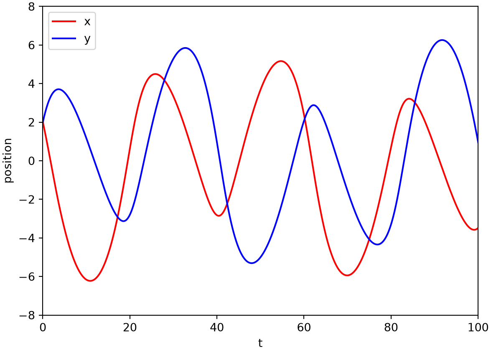
plt.plot(result_g2d2[:,1], result_g2d2[:,2], color="black")
plt.gca().set_aspect("equal")
plt.xlabel("x"); plt.ylabel("y"); plt.xlim(-8,8); plt.ylim(-8,8); plt.show()Text(0.5, 0, 'x')
Text(0, 0.5, 'y')
(-8.0, 8.0)
(-8.0, 8.0)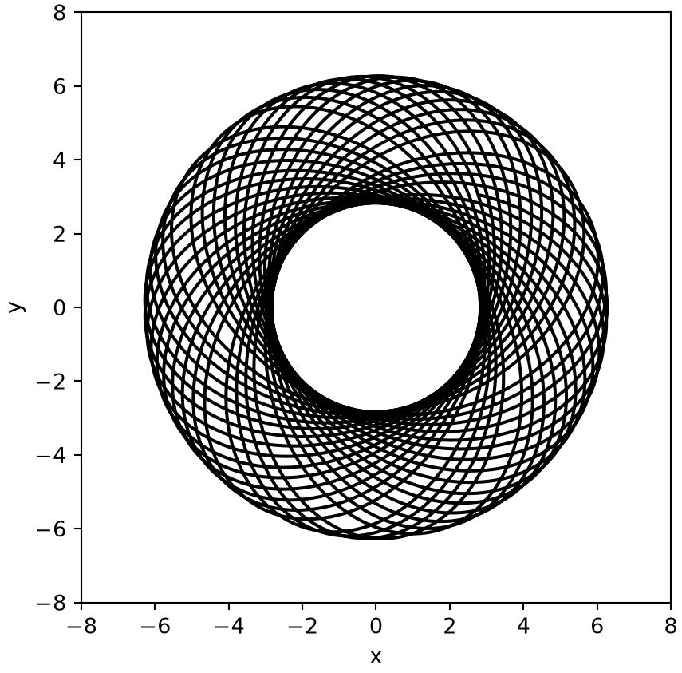
The first initial condition produces a closed, nearly elliptical orbit, while the second traces a precessing rosette that gradually fills an annulus, the orbit never quite closing on itself.
5B.2 Two-body problem
Next we let two particles of equal mass attract each other in the plane, a system of four coordinates \((x_1, y_1, x_2, y_2)\). Each particle feels the pull of the other, so the force function returns all four components at once. Unlike the random starting conditions one might reach for, we use fixed initial positions and velocities so the R and Python runs trace exactly the same trajectory.
NoteRecipe 5B.2.1
Objective. Simulate two equal masses orbiting under mutual attraction, and remove their overall drift.
Model. Two unit masses attracting each other with a 1/r-type central force, f1x = G*(x2-x1)/r12^2 and the equal-and-opposite f2x = G*(x1-x2)/r12^2 (likewise in y), with r12^2 = (x1-x2)^2 + (y1-y2)^2.
Method. The generic vector velocity-Verlet integrator on the four coordinates, with a shift to the center-of-mass frame (subtract the mean velocity per axis).
Test. G = 1, dt = 0.01, to t = 100; initial positions (2, 0, -2, 0), velocities (0, 0.4, 0, -0.2); a second run centers the velocities to zero total momentum.
Show. Orbit plots before and after shifting to the center-of-mass frame.
Verification. With nonzero total momentum the pair orbits while drifting across the plane; subtracting the mean velocity yields a stationary pattern about the common center of mass.
R implementation
# gravitational force between two particles in 2D
f_2body_2d <- function(t, x, G){
# x: vector (x1, y1, x2, y2)
r12_2 <- (x[1] - x[3])^2 + (x[2] - x[4])^2
f1_x <- (x[3] - x[1]) / r12_2; f1_y <- (x[4] - x[2]) / r12_2
f2_x <- (x[1] - x[3]) / r12_2; f2_y <- (x[2] - x[4]) / r12_2
return(G * c(f1_x, f1_y, f2_x, f2_y))
}
x0 <- c(2, 0, -2, 0); v0 <- c(0, 0.4, 0, -0.2) # net momentum is non-zero
result_2body <- velocity_verlet_generic(f = f_2body_2d, t0 = 0, x0 = x0, v0 = v0,
t.total = 100, dt = 0.01, G = 1)
par(pty = "s")
plot(result_2body[,2], result_2body[,3], type = "l", col = 2, xlab = "x", ylab = "y")
lines(result_2body[,4], result_2body[,5], col = 4)
legend("topleft", inset = 0.02, legend = c("1","2"), col = c(2,4), lty = 1, cex = 0.8)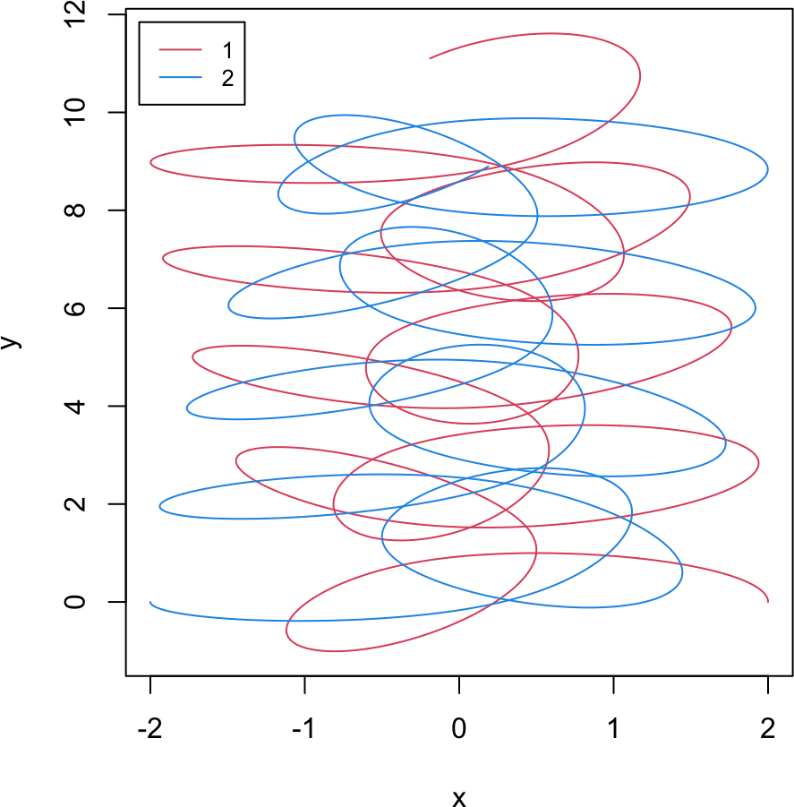
The two orbits share a repeating pattern but drift steadily across the plane, because the system carries a non-zero total momentum. Moving to a reference frame that travels with the center of mass removes the drift: we subtract from every particle the mean velocity of the system, giving zero total momentum.
# shift velocities so the total momentum (mean velocity) is zero
center_v <- function(v, ndim){
# v: velocity vector; ndim: spatial dimension (2 here)
v_mat <- matrix(v, ncol = ndim, byrow = TRUE)
v_means <- colMeans(v_mat)
return(v - v_means) # recycled: subtracts the per-dimension mean from each particle
}
result_2body <- velocity_verlet_generic(f = f_2body_2d, t0 = 0, x0 = x0, v0 = center_v(v0, 2),
t.total = 100, dt = 0.01, G = 1)
par(pty = "s")
plot(result_2body[,2], result_2body[,3], type = "l", col = 2, asp = 1, xlab = "x", ylab = "y")
lines(result_2body[,4], result_2body[,5], col = 4)
legend("topleft", inset = 0.02, legend = c("1","2"), col = c(2,4), lty = 1, cex = 0.8)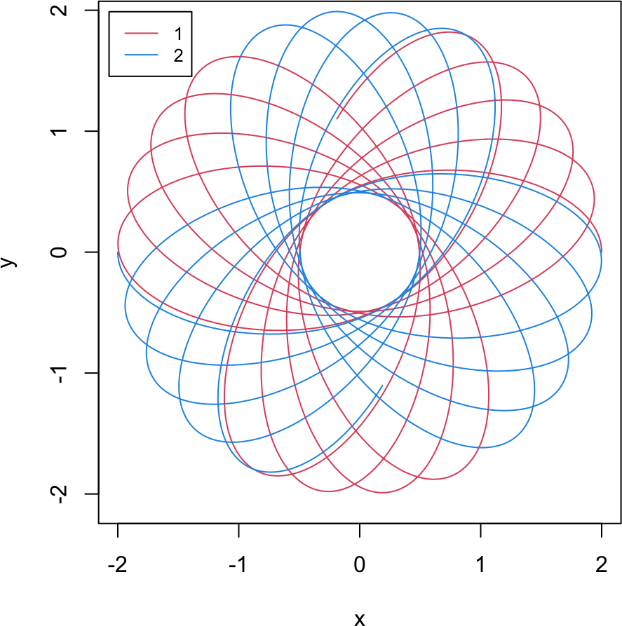
Python implementation
# gravitational force between two particles in 2D
def f_2body_2d(t, x, G):
# x: vector (x1, y1, x2, y2)
r12_2 = (x[0] - x[2])**2 + (x[1] - x[3])**2
f1_x = (x[2] - x[0]) / r12_2; f1_y = (x[3] - x[1]) / r12_2
f2_x = (x[0] - x[2]) / r12_2; f2_y = (x[1] - x[3]) / r12_2
return G * np.array([f1_x, f1_y, f2_x, f2_y])
x0 = np.array([2.0, 0.0, -2.0, 0.0]); v0 = np.array([0.0, 0.4, 0.0, -0.2]) # non-zero net momentum
result_2body = velocity_verlet_generic(f_2body_2d, 0, x0, v0, 100, 0.01, G=1)
plt.plot(result_2body[:,1], result_2body[:,2], color="red", label="1")
plt.plot(result_2body[:,3], result_2body[:,4], color="blue", label="2")
plt.xlabel("x"); plt.ylabel("y"); plt.legend(loc="upper left"); plt.show()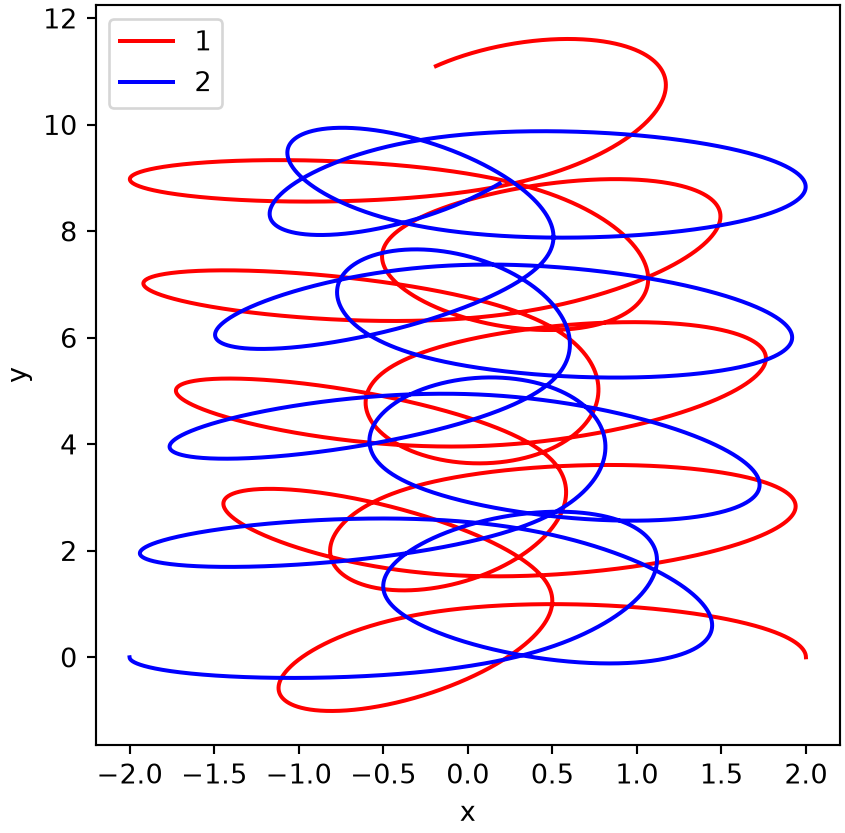
# shift velocities so the total momentum (mean velocity) is zero
def center_v(v, ndim):
# v: velocity vector; ndim: spatial dimension (2 here)
v_mat = np.reshape(v, (-1, ndim))
v_means = np.mean(v_mat, axis=0)
return v - np.tile(v_means, len(v) // ndim)
result_2body = velocity_verlet_generic(f_2body_2d, 0, x0, center_v(v0, 2), 100, 0.01, G=1)
plt.plot(result_2body[:,1], result_2body[:,2], color="red", label="1")
plt.plot(result_2body[:,3], result_2body[:,4], color="blue", label="2")
plt.gca().set_aspect("equal")
plt.xlabel("x"); plt.ylabel("y"); plt.legend(loc="upper left"); plt.show()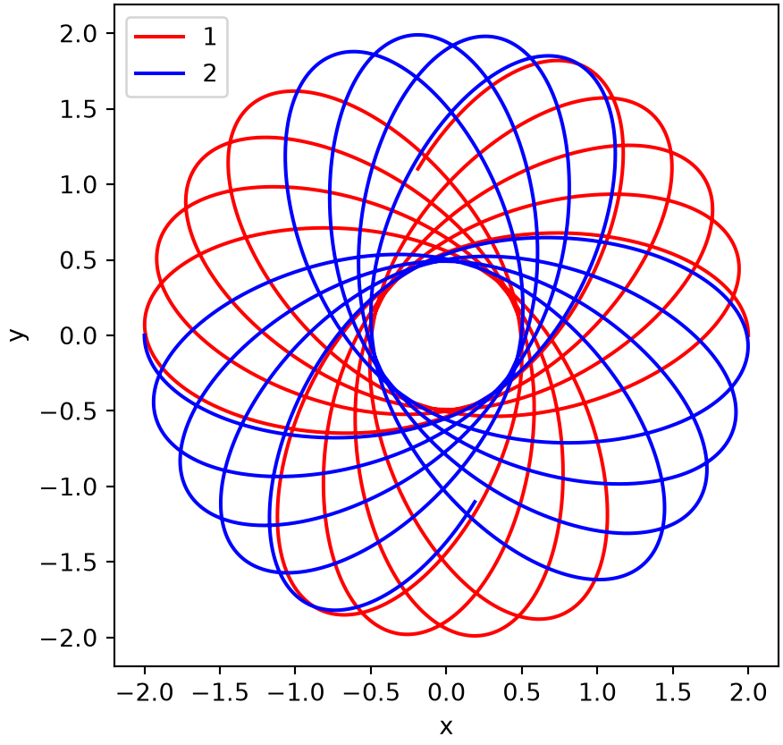
With the momentum removed, the two particles trace a stationary, closed pattern centered on their common center of mass.
5B.3 Three-body problem
Adding a third particle gives a six-coordinate system in which every particle attracts every other. The two-body motion was regular, but three mutually attracting bodies are famously chaotic: their trajectories are exquisitely sensitive to the initial conditions, and a small perturbation eventually sends one particle careening away from the other two.
NoteRecipe 5B.3.1
Objective. Simulate the chaotic three-body problem.
Model. Three unit masses, each attracting every other by a 1/r^2-scaled central force summed over partners, f1x = G*((x2-x1)/r12^2 + (x3-x1)/r13^2) (likewise for the other bodies and for y).
Method. The generic vector velocity-Verlet integrator on the six coordinates, started in the center-of-mass frame.
Test. G = 1, dt = 0.01, to t = 100; initial positions (-2, 0, 2, 0, 0, 3), velocities centered from (0.1, 0, -0.1, 0, 0, -0.05).
Show. An orbit plot of the three bodies, up to the escape.
Verification. The three bodies stay bound and weave for a while, then one gains enough energy to escape while the remaining pair recoils, the hallmark of three-body chaos.
R implementation
# gravitational forces among three particles in 2D
f_3body_2d <- function(t, x, G){
# x: vector (x1, y1, x2, y2, x3, y3)
r12_2 <- (x[1] - x[3])^2 + (x[2] - x[4])^2
r13_2 <- (x[1] - x[5])^2 + (x[2] - x[6])^2
r23_2 <- (x[3] - x[5])^2 + (x[4] - x[6])^2
f1_x <- (x[3]-x[1])/r12_2 + (x[5]-x[1])/r13_2
f1_y <- (x[4]-x[2])/r12_2 + (x[6]-x[2])/r13_2
f2_x <- (x[1]-x[3])/r12_2 + (x[5]-x[3])/r23_2
f2_y <- (x[2]-x[4])/r12_2 + (x[6]-x[4])/r23_2
f3_x <- (x[1]-x[5])/r13_2 + (x[3]-x[5])/r23_2
f3_y <- (x[2]-x[6])/r13_2 + (x[4]-x[6])/r23_2
return(G * c(f1_x, f1_y, f2_x, f2_y, f3_x, f3_y))
}
x0 <- c(-2, 0, 2, 0, 0, 3)
v0 <- center_v(c(0.1, 0, -0.1, 0, 0, -0.05), 3)
result_3body <- velocity_verlet_generic(f = f_3body_2d, t0 = 0, x0 = x0, v0 = v0,
t.total = 100, dt = 0.01, G = 1)
par(pty = "s")
plot(result_3body[,2], result_3body[,3], type = "l", col = "red", xlab = "x", ylab = "y",
xlim = range(result_3body[,c(2,4,6)]), ylim = range(result_3body[,c(3,5,7)]))
lines(result_3body[,4], result_3body[,5], col = "orange")
lines(result_3body[,6], result_3body[,7], col = "blue")
legend("topright", inset = 0.02, legend = c("1","2","3"),
col = c("red","orange","blue"), lty = 1, cex = 0.8)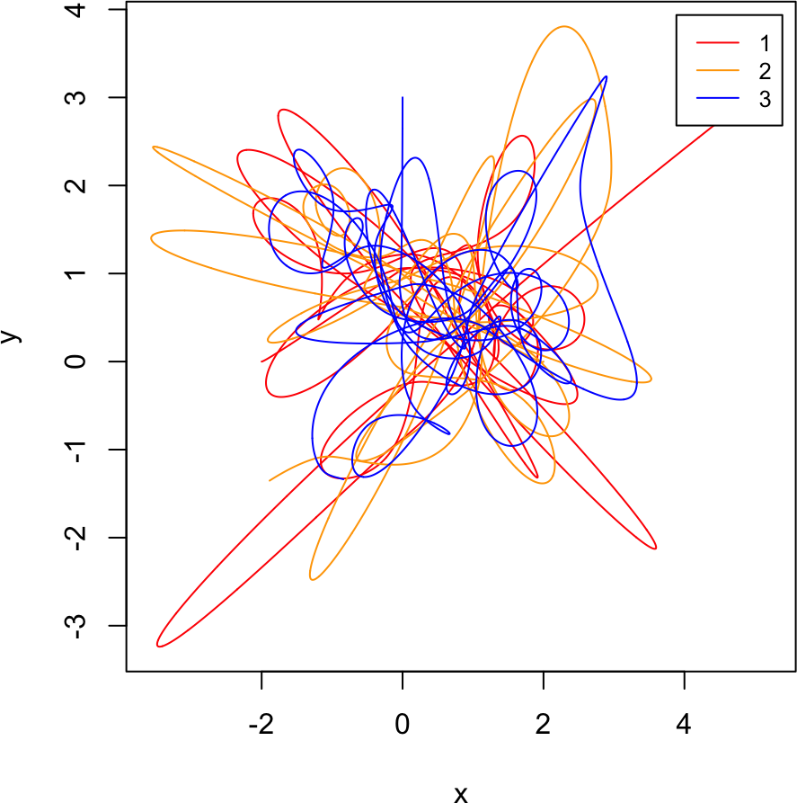
Python implementation
import warnings
warnings.filterwarnings("ignore")
# gravitational forces among three particles in 2D
def f_3body_2d(t, x, G):
# x: vector (x1, y1, x2, y2, x3, y3)
r12_2 = (x[0]-x[2])**2 + (x[1]-x[3])**2
r13_2 = (x[0]-x[4])**2 + (x[1]-x[5])**2
r23_2 = (x[2]-x[4])**2 + (x[3]-x[5])**2
f1_x = (x[2]-x[0])/r12_2 + (x[4]-x[0])/r13_2
f1_y = (x[3]-x[1])/r12_2 + (x[5]-x[1])/r13_2
f2_x = (x[0]-x[2])/r12_2 + (x[4]-x[2])/r23_2
f2_y = (x[1]-x[3])/r12_2 + (x[5]-x[3])/r23_2
f3_x = (x[0]-x[4])/r13_2 + (x[2]-x[4])/r23_2
f3_y = (x[1]-x[5])/r13_2 + (x[3]-x[5])/r23_2
return G * np.array([f1_x, f1_y, f2_x, f2_y, f3_x, f3_y])
x0 = np.array([-2.0, 0, 2.0, 0, 0, 3.0])
v0 = center_v(np.array([0.1, 0, -0.1, 0, 0, -0.05]), 3)
result_3body = velocity_verlet_generic(f_3body_2d, 0, x0, v0, 100, 0.01, G=1)
plt.plot(result_3body[:,1], result_3body[:,2], color="red", label="1")
plt.plot(result_3body[:,3], result_3body[:,4], color="orange", label="2")
plt.plot(result_3body[:,5], result_3body[:,6], color="blue", label="3")
plt.xlabel("x"); plt.ylabel("y"); plt.legend(loc="upper right"); plt.show()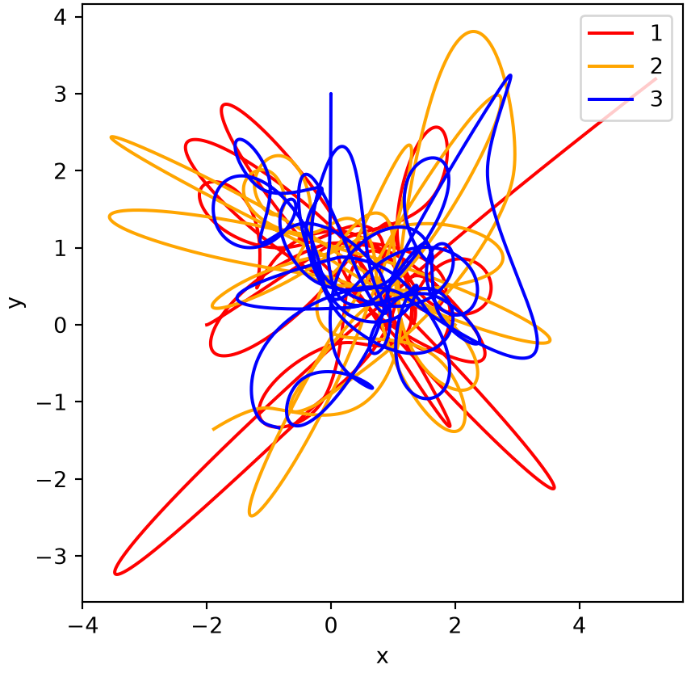
For a while the three particles stay bound and weave around one another, but the motion never settles into a repeating pattern. Given long enough, one particle gains enough energy to escape and the remaining pair recoils in the opposite direction, the hallmark of the chaotic three-body problem.
5B.4 Animating the trajectories
A static plot of the full trajectory hides the sequence of events; an animation makes the dynamics much easier to follow. The code below renders the three-body run as a moving picture and writes it to an animated GIF. Because a GIF cannot be embedded in a static book (and the rendering is slow), these blocks are shown for you to run locally rather than executed here.
R implementation
The gganimate package animates a ggplot by mapping time onto animation frames.
library(ggplot2)
library(gganimate)
library(gifski)
npoints <- nrow(result_3body)
df <- data.frame(
t = rep(result_3body[,1], 3),
x = c(result_3body[,2], result_3body[,4], result_3body[,6]),
y = c(result_3body[,3], result_3body[,5], result_3body[,7]),
particle = rep(c("1","2","3"), each = npoints)
)
p <- ggplot(df, aes(x = x, y = y, colour = particle)) +
geom_point(size = 5, alpha = 0.7, show.legend = FALSE) +
scale_color_manual(values = c("1" = "red", "2" = "orange", "3" = "blue")) +
labs(x = "x", y = "y")
anim <- p + transition_time(t) + labs(title = "t = {round(frame_time, 1)}")
anim <- animate(anim, fps = 20, nframes = 200, renderer = gifski_renderer())
anim_save("3-body.gif", animation = anim)Python implementation
The equivalent in Python uses matplotlib.animation.FuncAnimation, updating each particle’s position one frame at a time.
from matplotlib.animation import FuncAnimation
step = 50 # draw every 50th time step to keep the GIF short
frames = range(0, result_3body.shape[0], step)
fig, ax = plt.subplots()
ax.set_xlim(-4, 5); ax.set_ylim(-4, 5)
ax.set_xlabel("x"); ax.set_ylabel("y")
colors = ["red", "orange", "blue"]
dots = [ax.plot([], [], "o", color=c, ms=10, alpha=0.7)[0] for c in colors]
def update(i):
for dot, (cx, cy) in zip(dots, [(1, 2), (3, 4), (5, 6)]):
dot.set_data([result_3body[i, cx]], [result_3body[i, cy]])
ax.set_title(f"t = {result_3body[i, 0]:.1f}")
return dots
anim = FuncAnimation(fig, update, frames=frames, interval=50)
anim.save("3-body.gif", writer="pillow", fps=20)The code writes 3-body.gif, in which the three particles orbit, scatter, and finally fling one member away.
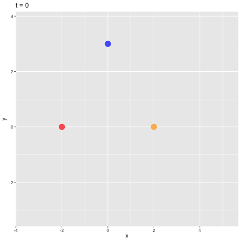
gganimate implementation above (the Python matplotlib version produces an equivalent GIF). It plays only in the HTML edition; the print editions show the static trajectory plot from the previous section.